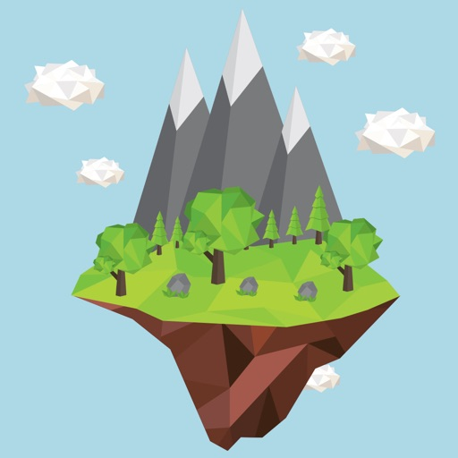
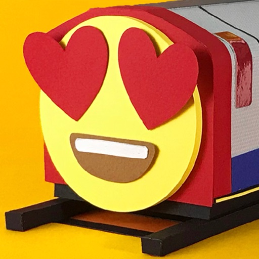
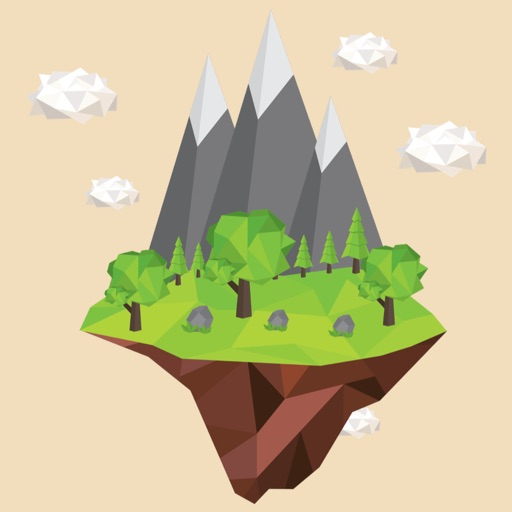
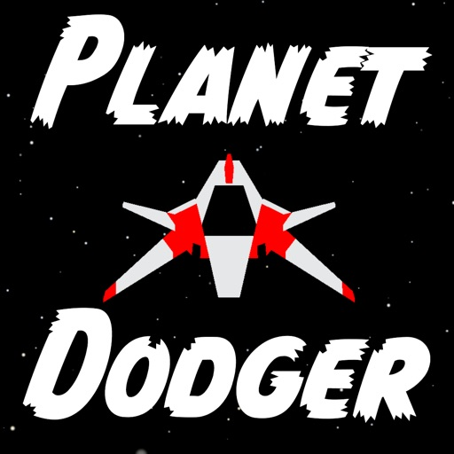
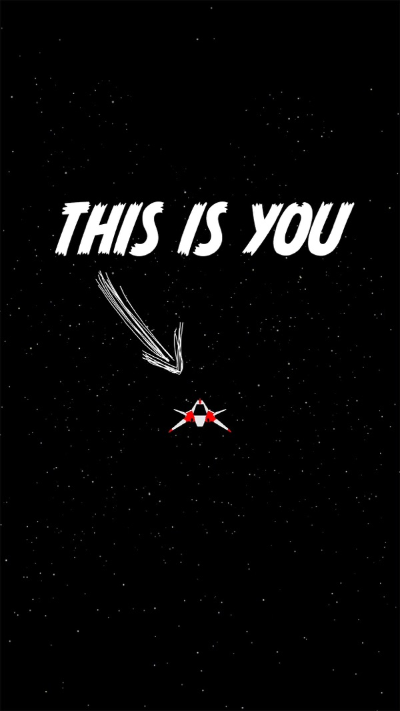
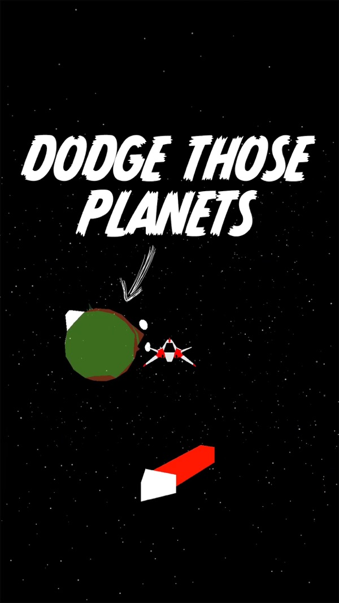
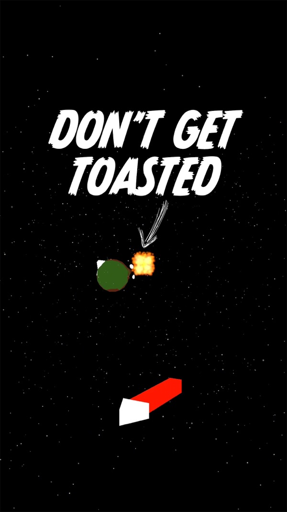

Mount Snowdon
Yr Wyddfa- Summit
- 1,085 m
- Routes
- 6
- Grid ref
- SH 609 543
I make silly small apps for iPhone and iPad that do one thing well.

London Trains Free Calling at: tube status, how busy your station is and a heads-up every morning — all told in emoji.Travel
Every route to the top, stored on your phone, with the summit weather forecast.



Games · Free
A super-tricky space game. You’re on the run, and the only thing between you and freedom is an endless field of planets. Dodge left and right for as long as you can.
Don’t get toasted.
Launch on the App Store

